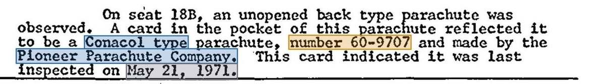
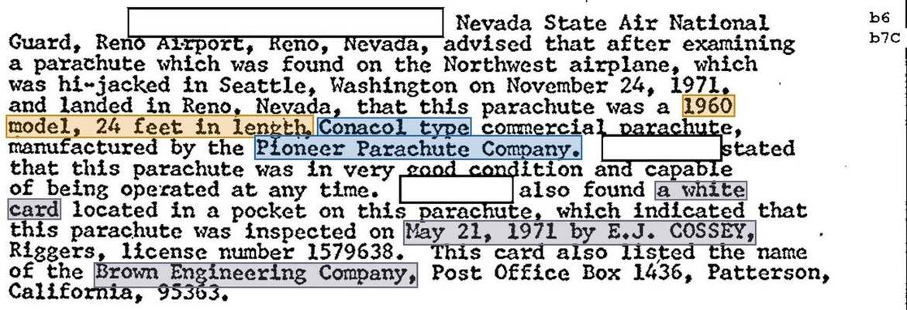
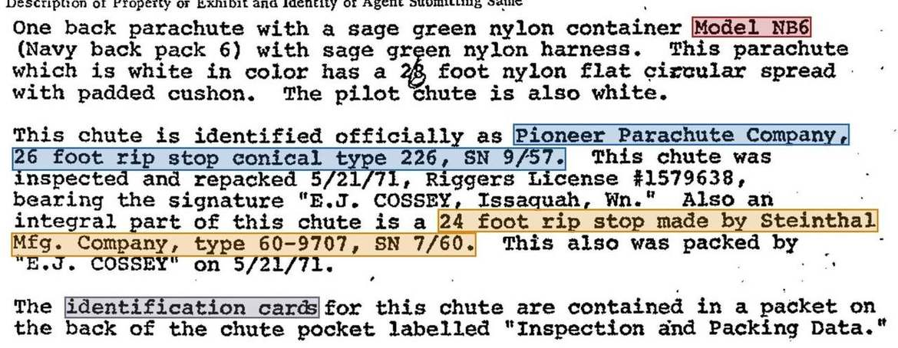
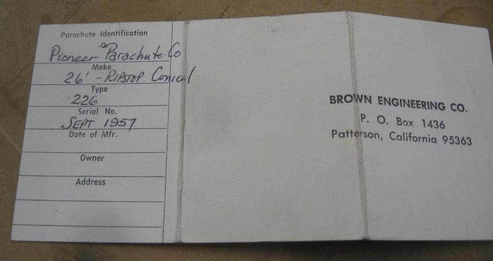
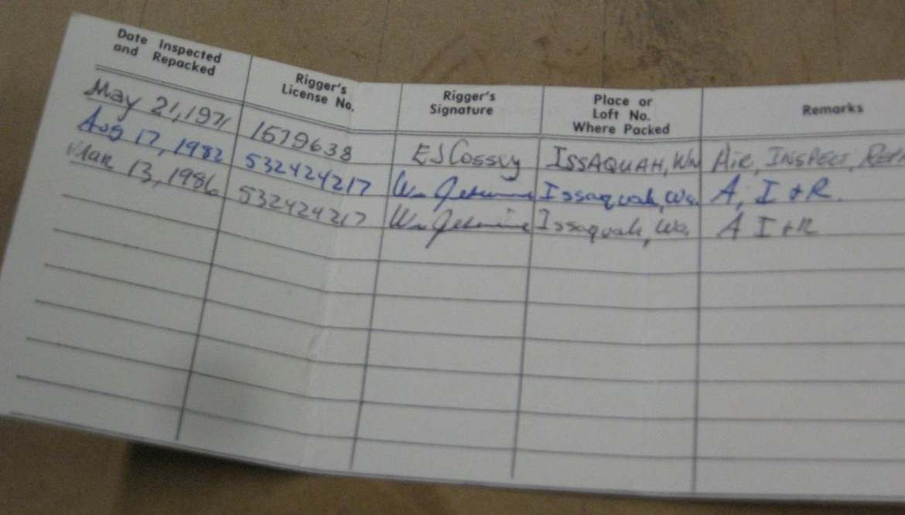
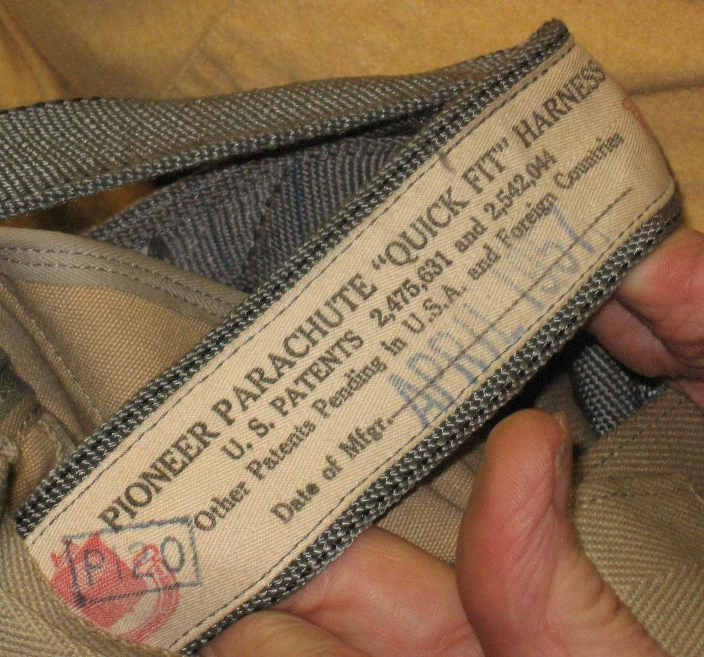
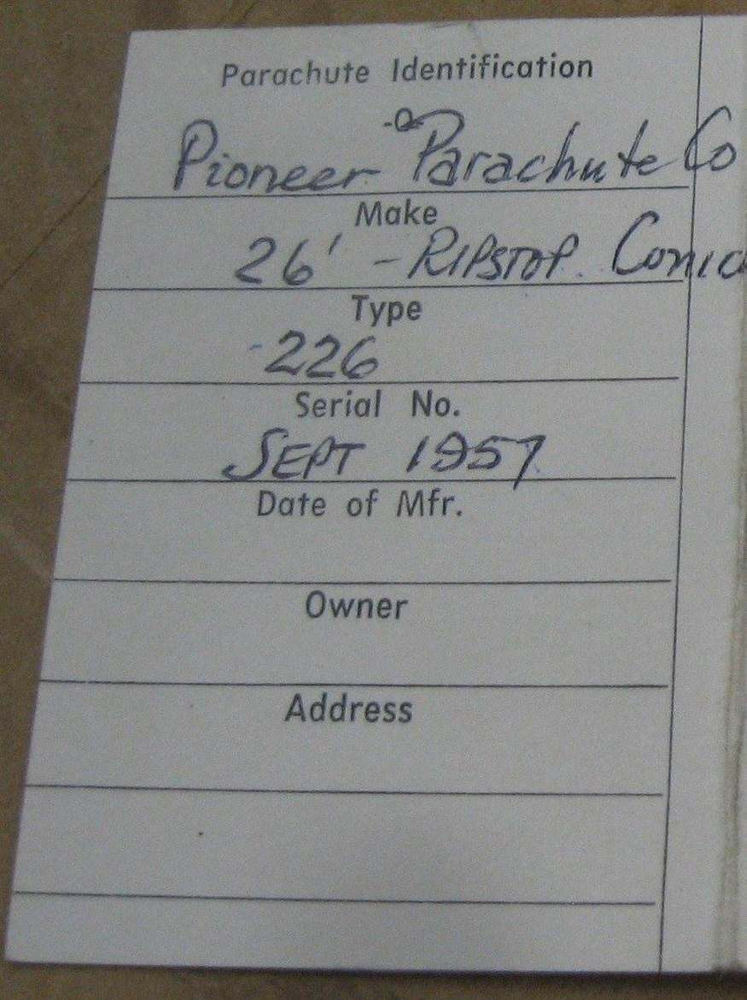

Two Cards, One Chute
Reconciling the Cooper Packing Cards
The leftover back parachute from Flight 305 carried two packing cards, both signed by rigger Earl Cossey on May 21, 1971. What the FBI recorded, what the 2011 inspection shows, and how the second card got there.
Key findings
The short version of what the FBI files and the 2011 inspection show about the two packing cards. Each point is developed in the sections that follow.
- Two cards, both from 5/21/71. The FBI's evidence inventory records two identification cards with the leftover chute. One is for a 26′ Pioneer canopy and one for a 24′ Steinthal canopy, and Cossey signed both on May 21, 1971.
- Both cards were already there in Reno. The two Reno reports from the night of the hijacking each mention only "a card." But the details they give come from both cards: Pioneer and "Conacol" from Card A, 24 ft, 1960 and 60-9707 from Card B. So whatever put the second card in that pocket happened before the plane landed.
- The FBI read the form one line off. The surviving Card A, photographed in 2011, shows that each printed field label sits under its entry. The FBI paired each entry with the label above it instead, which explains "type 226, SN 9/57." Applying the same correction to Card B gives Make: Steinthal · Type: 24′ rip stop · Serial No. 60-9707 · Mfd. July 1960.
- Nothing on the leftover rig matches Card B. The harness label reads Pioneer "Quick Fit," April 1957, and the canopy is a Pioneer from Sept 1957 per Card A. No Steinthal component and no 1960 date has been identified on the rig.
- Most likely explanation: Card B belongs to an unrelated rig and was misfiled in the loft on 5/21/71. Section 4 ranks five explanations with the points for and against each.
The two counts: Reno (night one) vs. the evidence inventory
The FBI described the leftover chute's card pocket in two separate counts. The first came from Reno on the night of the hijacking, November 24, 1971: the aircraft search team and the Nevada Air National Guard each mention only one card. The second is the Seattle evidence inventory four weeks later, which lists two cards, a 26′ Pioneer card and a 24′ Steinthal card. The Reno reports name just one card, but the details they record come from both cards the inventory later describes. So the Reno examiners must have been reading both cards. In the excerpts below, highlights show which card each detail matches.



Detail by detail
| Detail | Reno search (1A) | Air Guard (1B) | Inventory (1C) | Source card |
|---|---|---|---|---|
| Maker | "Pioneer Parachute Company" | "Pioneer Parachute Company" | Pioneer (A) · Steinthal (B) | Card A |
| Canopy shape | "Conacol type" | "Conacol type" | "26 foot rip stop conical" | Card A |
| Size | — | "24 feet in length" | 26 ft (A) · 24 ft (B) | Card B |
| Year | — | "1960 model" | "SN 9/57" (A) · "SN 7/60" (B) | Card B |
| Number | "number 60-9707" | — | "type 60-9707" (B) | Card B |
| Rigger and date | "May 21, 1971" | "May 21, 1971 by E.J. COSSEY … 1579638" | 5/21/71, Cossey, on both | Both |
| Form printer | — | "Brown Engineering Company, Post Office Box 1436, Patterson, California" | — | Card A (B unknown) |
| Number of cards | "A card" | "a white card" | "The identification cards … in a packet" |
Neither Reno report could have taken "24 feet," "1960" or "60-9707" from the 26′ Pioneer card. Neither could have taken "Pioneer" from the 24′ card, which the inventory credits to Steinthal. Yet both reports put details from each card into a single description. No card in the record carries all of those details together. The simplest explanation is that two folded cards sat in the pocket, possibly one tucked inside the other, and each writer merged them into "a card."
That matters for every theory in Section 4. Card B was in the pocket by the time the plane reached Reno, so nothing that happened after landing can explain it.
The inventory's first paragraph (red highlight above) describes the leftover as a sage-green "Model NB6 (Navy back pack 6)" with a "2_ foot … flat circular" canopy, with the second digit typed over. That matches Cossey's description of the missing rig, a Navy-surplus NB-6 with a 28′ flat circular canopy (Part 64 pp.108–109, Bates 26910–11; Part 64 p.204, Bates 27046). The 2011 photos show a tan container with a Pioneer "Quick Fit" harness. The same paragraph also calls Card B's canopy "an integral part of this chute." Because the writer was already mixing up the two rigs, that phrase deserves only limited weight.
The 2011 inspection (The Mountain News – WA)
On Oct. 24, 2011, Bruce A. Smith of The Mountain News – WA, with Bruce Thun (manager of Pierce County Airport / Thun Field), examined the leftover back chute at Norman Hayden's shop in Kent, Washington. He published the results the next day.
What the article reports
- Ownership. Hayden said both back chutes were his, that Northwest Orient paid him for them, and that he got the leftover back only after a drawn-out dispute. The FBI files record its return to the owner on 4/21/75 (Part 64 pp.82–83).
- Container. A tan pack that "looked more like a rugged duck-cloth fabric," which Smith thought looked WWII-vintage. He identified it as a Pioneer.
- Canopy. They did not pull it. A few inches showed white rip-stop nylon. Smith saw no "Steinthal" markings, although FBI agent Larry Carr had said online that it was a Steinthal.
- Seal. The lead seal was still in place, stamped "NWJ" / "IY3."
- Card. It reads "E.J. Cossey, certification number 1579638," dated May 21, 1971, followed by later repacks by Wes Jeppsen. The card shows Aug 17, 1982 and Mar 13, 1986; the article text says 1982 and 1984.
The article's two captions show two sides of one folded booklet, printed on white card stock with two folds. The outside has the "Parachute Identification" panel, a blank middle and a cover printed Brown Engineering Co., P.O. Box 1436, Patterson, California 95363. The inside spread is the repack log. That is the same printer and address the Air Guard copied down in Reno.
- Only one card. Only the 26′ card is described or photographed; there is no mention of a 24′ Steinthal card. So Card B left the pocket at some point after 1971. Either the FBI kept it when it returned the chute in 1975, or it was removed later, by Hayden or by Wes Jeppsen when he repacked the rig in 1982 or 1986. A rigger might well discard a card that doesn't match the canopy he is packing.
- The "identical chutes" claim doesn't hold up. In 2011 Hayden and Barry Halstad (Pacific Aviation) said Hayden's two back chutes were identical, and Halstad suggested two sets of back chutes might have been gathered that day. The 1971 record contradicts this. The owner's description on 11/25/71 gave two different rigs: #1 a tan civilian rig with a 26′ canopy, and #2 an olive-drab military rig with a 28′ canopy (Part 64 p.209). On 11/26/71 Cossey described the missing rig as a sage-green Navy NB-6 with a 28′ canopy (Part 11 p.53). Both 1971 accounts describe two different chutes.
- Cossey's position. Cossey maintained the chutes were his. He said Cooper took a 28′ military canopy in an NB-8 container (the FBI files say NB-6), and that the leftover was a Pioneer rig.



| Part | Maker | Date |
|---|---|---|
| Harness | Pioneer "Quick Fit" | April 1957 |
| Canopy | Pioneer, 26′ ripstop conical | Sept 1957 |
| Container | Tan duck cloth (Smith: Pioneer) | — |
The two Pioneer parts were made five months apart, which looks like an original factory set. A Pioneer Quick-Fit harness is also not the Navy NB-6 harness the inventory describes. Nothing seen on this rig is Steinthal or dated 1960.
The canopy dates from 1957, but Card A's first entry is Cossey's on 5/21/71. Hayden said he acquired the chutes around 1968, yet the card has no earlier repacks. That fits Cossey's statement that he made the rig up "from component parts" (Part 64 p.108, Bates 26910) and started a fresh card that day.
The FBI read the card one field off
The photographed card explains the strange wording in the inventory ("type 226, SN 9/57"). Applying the same correction to the 24′ card changes what its numbers mean.

| Printed label | Entry just above it | FBI inventory reading |
|---|---|---|
| Make | Pioneer Parachute Co | "Pioneer Parachute Company," |
| Type | 26′ – Ripstop Conical | "26 foot rip stop conical" |
| Serial No. | 226 | "type 226" |
| Date of Mfr. | Sept 1957 | "SN 9/57" |
| Owner / Address | (blank) | — |
The FBI instead paired each entry with the label above it, so every field slipped one line: the serial number became the "type" and the manufacture date became the "SN."
The rigger clearly meant the labels as captions under each entry. Read that way, every entry fits its field: a maker, a canopy description, a number and a date. The FBI's reading leaves the top entry unlabeled, puts a month and year under Serial No., and leaves Date of Mfr. blank. A Sept 1957 canopy also matches the April 1957 harness. Smith's 2011 article repeats the FBI's misreading ("a Pioneer, type 226").
Applying the correction to Card B (24′)
| Field | Inventory wording (12/21/71) | Corrected reading | Night-one cross-check (Reno) |
|---|---|---|---|
| Make | "made by Steinthal Mfg. Company" | Steinthal Mfg. Co. | Both Reno reports say Pioneer (from Card A) |
| Type | "24 foot rip stop" | 24′ rip stop | Air Guard: "24 feet in length" |
| Serial No. | "type 60-9707" | 60-9707 | Reno search: "number 60-9707" |
| Date of Mfr. | "SN 7/60" | July 1960 | Air Guard: "1960 model" |
| Repack | "packed by E.J. COSSEY on 5/21/71" | Cossey, 5/21/71 | Both: "May 21, 1971" |
The Reno examiners read 60-9707 as a number and 1960 as the model year, which is the corrected reading. Only the inventory writer used the shifted reading, and he used it for both cards. Corrected, Card B is a Steinthal 24′ rip-stop canopy, serial 60-9707, made July 1960, last packed by Cossey on 5/21/71.
Caveat: Card B has never been photographed, and its current whereabouts are unknown. This correction assumes it was the same Brown Engineering form, which fits the matching shift in the inventory wording.
How did Card B get into the pocket? Five explanations, ranked
Ranked from most to least likely. Every explanation must fit these established points:
- Both cards were in the pocket when the plane landed in Reno (Section 1).
- Cossey signed both cards on 5/21/71.
- The leftover rig is a Pioneer harness (Apr 1957) with a Pioneer 26′ canopy (Sept 1957).
- Hayden (11/25/71) and Cossey (11/26/71 and 5/31/72) both described the missing canopy as 28′.
- The "Inspection and Packing Data" pocket is on the back of the pack, outside the sealed closing, so moving a card would not disturb the lead seal.
- A clerical slip by Cossey on 5/21/71
- Another customer's 24′ Steinthal rig in Cossey's loft that day
- Cooper's chute was the 24′, so Hayden's and Cossey's 28′ were both wrong
- Someone deliberately moved the card after packing
- Card B was an older card that had run out of room (pre-1971 entries)
- The rig once held a 24′ Steinthal canopy that has left no trace
- Cossey signed a card for a canopy no longer in the pack
For
- Nobody has to be wrong about canopy sizes: Hayden's and Cossey's 28′ for the missing chute both stand.
- Fits a working loft that handled several rigs and their cards in a day.
- Fits Card B's only known entry, Cossey on 5/21/71, which looks like a card in use that day.
- Fits the fact that nothing on the leftover rig is Steinthal or dated 1960.
Against
- Depends on coincidence: the stray card had to land in one of the two rigs that went to a hijacking six months later.
- Cossey would have had to miss an extra card when he closed out the pack.
- No record of a second 24′ Steinthal rig in Cossey's loft. His serial records never surfaced in the files.
- A clerical slip by Cossey on 5/21/71
- Another customer's 24′ Steinthal rig in Cossey's loft that day
- Cooper's chute was the 24′, so Hayden's and Cossey's 28′ were both wrong
- Someone deliberately moved the card after packing
- Card B was an older card that had run out of room (pre-1971 entries)
- The rig once held a 24′ Steinthal canopy that has left no trace
- Cossey signed a card for a canopy no longer in the pack
For
- Mixing up cards between two rigs packed side by side is the most ordinary paperwork error.
- Explains why both cards carry the same rigger and the same date.
- A 1960 non-Pioneer canopy fits a Navy-surplus NB-6 (Cooper's rig, per Cossey) better than this civilian Pioneer rig.
Against
- Hayden said 28′ on night one (Part 64 p.209).
- Cossey said 28′ on 11/26/71, and on 5/31/72, after examining the leftover chute, described a 28′ flat circular canopy with 28 numbered panels (Part 64 p.108).
- Cossey still said 28′ in 2011.
- A clerical slip by Cossey on 5/21/71
- Another customer's 24′ Steinthal rig in Cossey's loft that day
- Cooper's chute was the 24′, so Hayden's and Cossey's 28′ were both wrong
- Someone deliberately moved the card after packing
- Card B was an older card that had run out of room (pre-1971 entries)
- The rig once held a 24′ Steinthal canopy that has left no trace
- Cossey signed a card for a canopy no longer in the pack
For
- Hayden had both rigs for six months.
- The pocket is outside the seal, so "lead seals unbroken" doesn't rule this out.
Against
- No apparent reason to do it.
- Hayden kept the chutes only to meet the FAA aerobatic rules and never jumped.
- In 2011 he believed the two chutes were identical, with no sign he paid attention to the cards.
- Requires both witnesses to be wrong about 28′.
- A clerical slip by Cossey on 5/21/71
- Another customer's 24′ Steinthal rig in Cossey's loft that day
- Cooper's chute was the 24′, so Hayden's and Cossey's 28′ were both wrong
- Someone deliberately moved the card after packing
- Card B was an older card that had run out of room (pre-1971 entries)
- The rig once held a 24′ Steinthal canopy that has left no trace
- Cossey signed a card for a canopy no longer in the pack
For
- The card Smith photographed in 2011 has Cossey's 5/21/71 entry as its first line, so Card A was a brand-new card that day, as this scenario expects.
- The inventory calls the 24′ canopy "an integral part of this chute," in all three copies.
- Hayden described chute #1 as having "a military chute inside of it" (Part 64 p.209, Bates 27054).
- Cossey said he made the rig up "from component parts" (Part 64 p.108).
Against
- The harness is a Pioneer from April 1957, not a Steinthal from 1960, so Card B isn't the harness's original card.
- The card identifies a canopy. Logging a repack on a card for a canopy no longer in the pack is irregular.
- A card full enough to need replacing would carry pre-1971 entries, and the FBI records none.
- The inventory's "integral part" wording comes from the same paragraph that confuses the two rigs. The only part of the rig whose maker is still unknown is the container.
- A clerical slip by Cossey on 5/21/71
- Another customer's 24′ Steinthal rig in Cossey's loft that day
- Cooper's chute was the 24′, so Hayden's and Cossey's 28′ were both wrong
- Someone deliberately moved the card after packing
- Card B was an older card that had run out of room (pre-1971 entries)
- The rig once held a 24′ Steinthal canopy that has left no trace
- Cossey signed a card for a canopy no longer in the pack
For
- Cooper handled and compared both back rigs before choosing one.
- The pocket is outside the seal, so the card could be moved without opening the pack.
Against
- If he wanted the card off his rig, leaving it on the plane makes little sense; it could simply have gone out the door with him.
- A 24′ canopy comes down faster than a 26′, so the landing is harder and more dangerous. Anyone who read both cards closely enough to move one would hardly have chosen the smaller canopy.
- It would have been done in a dim cabin while he was rigging up under time pressure.
- Requires both witnesses to be wrong about 28′.
What could settle it
| Check | What it would show |
|---|---|
| Card B's full repack history, if it still exists in the packet with the chute (now at the Washington State History Museum, Tacoma) | Entries from the 1960s by other riggers would support #4 (carry-over). Only the 5/21/71 Cossey line would rule #4 out and point to #1, #2 or #3. |
| The container's maker's label | A Steinthal or 1960 label would revive the carry-over theory. A Pioneer label closes it. |
| The canopy's own markings (pull it from the pack) | Settles whether any Steinthal fabric is in the rig. Smith saw none in 2011, though he didn't pull the canopy. Larry Carr reportedly said Steinthal, but he may simply have been repeating the FBI file's description of Card B rather than reporting markings he had seen himself. |
| Cossey's serial records | He told the FBI on 5/31/72 that he would check them (Part 64 p.109, Bates 26911). No result appears in Parts 1–122. They could separate #1 (unrelated rig) from #2 (same-day mix-up). |
| The 1972 Patterson, California contact | A Sacramento memo records the FBI recontacting someone in Patterson, the home of the card's printer, on 1/21/72 about the parachutes. He had nothing to add to what he had "previously furnished" (Part 22 p.204, Bates 6545). The name is redacted, and his earlier statement may describe the card form. |
Sources
| Part | Page | Bates | Date | Document |
|---|---|---|---|---|
| 17 | 125 | 4951 | 11/24/71 | FD-302, search of the aircraft at Reno |
| 17 | 129 | 4955 | 11/26/71 | FD-302, Nevada Air National Guard examination of the back chute |
| 64 | 130 | 26940 | 12/21/71 | FD-192 evidence inventory, leftover back chute (two cards); copies at Part 66 p.211 and Part 110 p.298 (Bates 606) |
| 64 | 209 | 27054 | 11/25/71 | Memo, SA Chipman: both back packs as described by the supplier (Hayden): #1 26′ "civilian luxury," #2 28′ military |
| 11 | 53 | 1950 | 11/26/71 | FD-302, Earl J. Cossey interview: missing rig NB-6, 28′ |
| 64 | 204 | 27046 | 11/26/71 | Seattle teletype: Cossey identifies the missing back pack |
| 64 | 108–109 | 26910–11 | 5/31/72 | FD-302, Cossey re-interview: rig made up from components; leftover 26′; missing 28′ flat circular, Navy NB-6; will check serial records |
| 22 | 204 | 6545 | 1972 | Sacramento memo: Patterson, California contact recontacted re parachutes |
| 64 | 82–83 | 26879–80 | 4/21/75 | Leftover chute returned to its owner; signed receipt |
| Bruce A. Smith, "DB Cooper case heats up again with controversy over parachutes," The Mountain News – WA, Oct. 25, 2011 · themountainnewswa.net/2011/10/25/db-cooper-case-heats-up-again-with-controversy-over-parachutes/ | ||||
FBI page excerpts are cropped from the FBI Vault scans, with colored highlights added. Photographs © 2011 Bruce A. Smith / The Mountain News – WA, reproduced here with credit for commentary and research; see the original article for the full photo set. Bates numbers are the "DB Cooper-#####" stamps on each page.